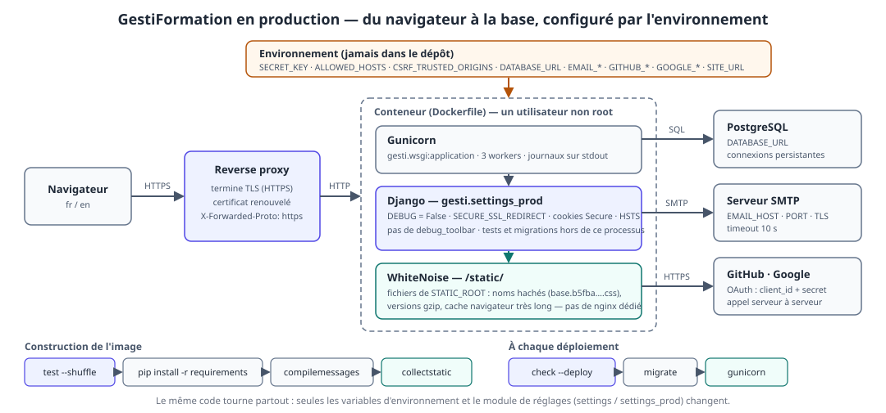
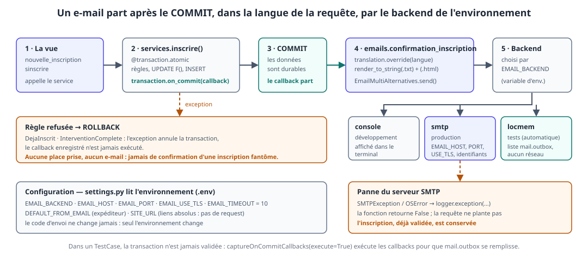
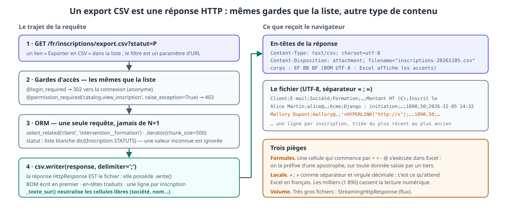
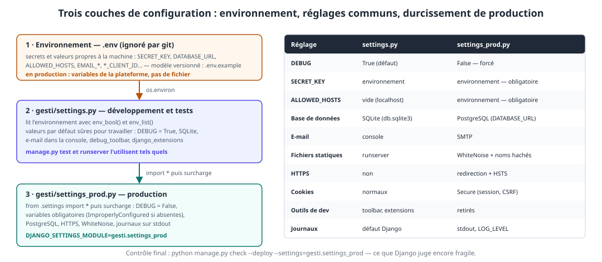

À la fin de la journée, les participants sont capables de :
- configurer l'envoi d'e-mails par backend (console, SMTP, mémoire) et choisir le bon moment pour envoyer : après le
COMMIT, jamais avant ; - produire un message texte + HTML, dans la langue du destinataire, avec des liens absolus, depuis des gabarits ;
- tester un envoi avec
mail.outboxetcaptureOnCommitCallbacks, sans serveur de messagerie ; - exporter des données en CSV depuis une vue protégée, lisible dans Excel, sans injection de formule ;
- expliquer le flux OAuth 2.0 « Authorization Code » et brancher GitHub / Google avec django-allauth ;
- relier un compte social au profil
Client, sans réseau dans les tests ; - séparer développement et production : variables d'environnement,
settings_prod,DEBUG = False,ALLOWED_HOSTS,check --deploy; - servir les fichiers statiques avec WhiteNoise, se connecter à PostgreSQL, lancer l'application sous Gunicorn dans un conteneur ;
- dérouler la chaîne tests → construction → déploiement et dire pourquoi la suite de tests en est le premier maillon.
Livrable de la journée
- un e-mail de confirmation (texte + HTML, fr/en) envoyé à chaque inscription validée, jamais pour une inscription refusée ;
- un export CSV des inscriptions (
/fr/inscriptions/export.csv), filtrable par statut, réservé à qui peut déjà voir la liste ; - des boutons GitHub / Google sur la page de connexion, affichés pour chaque fournisseur configuré ;
gesti/settings_prod.py, unDockerfile, un.env.exampleet une configuration validée parcheck --deploy;- 29 tests de plus (e-mails, export, OAuth, configuration de production) : le dépôt de référence en compte 102, exécutables en une commande.
💡 Fil conducteur : jusqu'ici, GestiFormation vivait sur la machine du stagiaire. Aujourd'hui il parle au monde extérieur (un serveur de messagerie, un tableur, un fournisseur d'identité, une base serveur). Chaque ouverture ajoute une dépendance qui peut tomber en panne : la journée apprend à les isoler, à les configurer par l'environnement, et à les tester sans elles.
| Heure | Séquence | Blocs programme |
|---|---|---|
| 09h00 – 09h15 | Reprise du J4 : check, test, migrate, dépendances, commit |
— |
| 09h15 – 10h30 | B12·a — E-mails : backends, on_commit, gabarits, tests |
Bloc 12 |
| 10h30 – 10h45 | Pause | |
| 10h45 – 11h45 | B12·b — Export CSV : vue protégée, Excel, injection de formule | Bloc 12 |
| 11h45 – 12h45 | B12·c·1 — OAuth : le flux, django-allauth, configuration |
Bloc 12 |
| 12h45 – 13h45 | Déjeuner | |
| 13h45 – 14h45 | B12·c·2 — OAuth : liaison au Client, tests sans réseau, atelier |
Bloc 12 |
| 14h45 – 15h00 | Pause | |
| 15h00 – 16h30 | B12·d — Production : settings_prod, statiques, base, Gunicorn, Docker |
Bloc 12 |
| 16h30 – 17h00 | Démonstrations, bilan des 5 jours, et après ? | — |
Reprise du jour 4 (15 min)
python manage.py check
python manage.py test --shuffle
python manage.py migrate
Trois points d'attention sur le dépôt de référence, à régler avant de commencer :
| Constat | Correction |
|---|---|
manage.py test ne trouve aucun test |
catalog/tests/ doit contenir un fichier __init__.py vide (piège n°41 du J4 : un dossier sans __init__.py n'est pas découvert) |
trois tests de langue / formulaire encore rouges (test_telephone_invalide, test_pluriel, test_libelles_du_modele) |
ajouter code='telephone_invalide' au ValidationError (§10.4), créer le catalogue fr de pluriel (§10.6), traduire « intervention » en training session : 10 minutes, et la suite redevient verte |
locale/ est absent du dépôt |
.gitignore contenait *.po : le .po est la source de la traduction, il doit être versionné ; seul le .mo (compilé) est un artefact. On retire *.po du .gitignore (§12.20) |
⚠️ Jamais de déploiement sur une suite rouge. Aujourd'hui,
manage.py testest le premier maillon de la chaîne de livraison. On ne passe à la suite que lorsqu'il est vert.
Dépendances nouvelles du jour (le requirements.txt du dépôt est à jour) :
pip install "django-allauth[socialaccount]" whitenoise gunicorn dj-database-url "psycopg[binary]" coverage
pip freeze > requirements.txt # sous PowerShell : écrire en UTF-8, pas en UTF-16
⚠️ PowerShell 5 et
>: la redirection écrit en UTF-16.pipsait le relire, mais git affiche un fichier binaire. Écrire le fichier avecOut-File -Encoding utf8, ou depuis un terminalbash.

(Le détail de cette architecture est revu au §12.25. On l'affiche dès le matin : chaque séquence en colore un coin.)
| Séquence | Dépendance extérieure | Ce qui peut mal tourner | Parade |
|---|---|---|---|
| a — E-mail | serveur SMTP | panne, lenteur, message envoyé pour rien | on_commit, EMAIL_TIMEOUT, try/except, journal |
| b — Export | Excel / LibreOffice | accents illisibles, formule exécutée | BOM, ;, préfixe ' |
| c — OAuth | GitHub, Google | URL de retour fausse, compte dupliqué | URL hors préfixe de langue, signal, adaptateurs |
| d — Production | proxy, base, plateforme | secret dans le dépôt, DEBUG = True |
environnement, settings_prod, check --deploy |
12.1. Trois façons d'envoyer, un seul moteur
Django fournit un module django.core.mail. Quel que soit le point d'entrée, le message passe par un backend choisi par la configuration.
| Fonction / classe | Usage |
|---|---|
send_mail(sujet, corps, expéditeur, [destinataires]) |
un message texte, une ligne de code |
EmailMessage(...) |
texte + pièces jointes, en-têtes (reply_to, cc) |
EmailMultiAlternatives(...) |
texte + version HTML : ce que nous utilisons |
mail_admins(...) |
alerte aux ADMINS (hors périmètre) |
| Backend | Quand | Effet |
|---|---|---|
console.EmailBackend |
développement | le message s'affiche dans le terminal du serveur |
smtp.EmailBackend |
production | envoi réel par un serveur SMTP |
locmem.EmailBackend |
tests (activé automatiquement par manage.py test) |
liste mail.outbox, aucun réseau |
filebased.EmailBackend |
recette | un fichier par message dans un dossier |
💡 Même code partout : on n'écrit jamais
if DEBUG:autour d'un envoi. SeulEMAIL_BACKENDchange, et il vient de l'environnement.
12.2. Les réglages
# gesti/settings.py — J5
def env_bool(nom, defaut=False):
return os.environ.get(nom, str(int(defaut))).strip().lower() in ('1', 'true', 'yes', 'on')
EMAIL_BACKEND = os.environ.get('EMAIL_BACKEND', 'django.core.mail.backends.console.EmailBackend')
EMAIL_HOST = os.environ.get('EMAIL_HOST', 'localhost')
EMAIL_PORT = int(os.environ.get('EMAIL_PORT', '25'))
EMAIL_HOST_USER = os.environ.get('EMAIL_HOST_USER', '')
EMAIL_HOST_PASSWORD = os.environ.get('EMAIL_HOST_PASSWORD', '')
EMAIL_USE_TLS = env_bool('EMAIL_USE_TLS', False)
EMAIL_TIMEOUT = 10 # sans délai, un SMTP muet bloque la requête indéfiniment
DEFAULT_FROM_EMAIL = os.environ.get('DEFAULT_FROM_EMAIL', 'GestiFormation <formations@example.org>')
SERVER_EMAIL = DEFAULT_FROM_EMAIL # expéditeur des e-mails d'erreur envoyés aux ADMINS
SITE_URL = os.environ.get('SITE_URL', 'http://127.0.0.1:8000') # liens absolus dans les e-mails (pas de request)
Deux réglages que les stagiaires oublient et qui font mal en production :
EMAIL_TIMEOUT: par défaut, il n'y en a pas. Un serveur SMTP qui ne répond pas gèle le worker qui traite l'inscription ;SITE_URL: un e-mail est écrit hors requête. Il n'existe pas derequest.build_absolute_uri(); le domaine doit venir de la configuration.
⚠️ Piège n°46 — le lien relatif dans un e-mail :
<a href="/fr/mon-espace/">est mort dans une messagerie : elle n'a pas de domaine de référence. ToujoursSITE_URL + reverse(...).
12.3. Quand envoyer ? Après le COMMIT

inscrire() est @transaction.atomic. Si l'on envoie l'e-mail dans la fonction, deux scénarios dangereux :
| Scénario | Conséquence |
|---|---|
l'e-mail part, puis l'INSERT échoue (contrainte, exception, panne) |
le client reçoit une confirmation pour une inscription qui n'existe pas |
| l'e-mail part, puis la transaction est annulée par une exception ultérieure | idem, et impossible à rattraper : un e-mail ne se « rollback » pas |
La parade s'appelle transaction.on_commit(callback) : Django mémorise le callback et ne l'exécute qu'après le COMMIT de la transaction externe. En cas de ROLLBACK, il est jeté.
⚠️ Piège n°47 — un e-mail dans la transaction : « ça marche » en développement, où rien n'échoue. Le jour où une règle refuse l'inscription, le client a déjà reçu sa confirmation. L'ordre des opérations est la règle métier.
12.4. catalog/emails.py — la fonction d'envoi
# catalog/emails.py
import logging
from smtplib import SMTPException
from django.conf import settings
from django.core.mail import EmailMultiAlternatives
from django.template.loader import render_to_string
from django.urls import reverse
from django.utils import translation
from django.utils.translation import gettext as _
logger = logging.getLogger(__name__)
def confirmation_inscription(inscription, langue=None) -> bool:
"""
Envoie la confirmation d'inscription (texte + HTML) au client.
Retourne False si l'envoi échoue : un e-mail raté n'annule jamais une inscription.
"""
langue = langue or translation.get_language()
intervention = inscription.intervention
formation = intervention.formation
# hors requête : pas de request.build_absolute_uri → SITE_URL + reverse() dans la langue de l'e-mail
with translation.override(langue):
contexte = {
'client': inscription.client,
'formation': formation,
'intervention': intervention,
'inscription': inscription,
'url_espace': settings.SITE_URL + reverse('catalog:mon-espace'),
}
sujet = _('Inscription enregistrée : %(formation)s') % {'formation': formation.nom}
texte = render_to_string('catalog/emails/confirmation_inscription.txt', contexte)
html = render_to_string('catalog/emails/confirmation_inscription.html', contexte)
message = EmailMultiAlternatives(sujet, texte, to=[inscription.client.email])
message.attach_alternative(html, 'text/html')
try:
message.send()
except (SMTPException, OSError):
logger.exception("Envoi impossible de la confirmation de l'inscription %s", inscription.pk)
return False
return True
Lecture guidée :
| Choix | Pourquoi |
|---|---|
fonction dans son module emails.py |
la vue et le service ne savent pas comment on envoie ; on peut la remplacer ou la tester seule |
translation.override(langue) |
le sujet, le texte, le HTML et reverse() utilisent la même langue |
from omis |
DEFAULT_FROM_EMAIL s'applique |
except (SMTPException, OSError) |
OSError couvre ConnectionRefusedError, TimeoutError, DNS… Pas de except Exception : on n'avale pas un bug |
logger.exception |
la trace complète est dans les journaux ; la requête de l'utilisateur, elle, aboutit |
| retourne un booléen | le test et l'appelant savent si l'envoi a réussi |
💡 Pas de
BadHeaderError: Django refuse un sujet contenant un retour à la ligne (injection d'en-tête). Le nom d'une formation n'en contient pas ; une donnée saisie par un utilisateur pourrait. Ne jamais construire un destinataire ou un sujet par concaténation d'une saisie non contrôlée.
12.5. Les gabarits d'e-mail
Deux fichiers jumeaux dans catalog/templates/catalog/emails/.
{# confirmation_inscription.txt — {% autoescape off %} : un e-mail texte n'est pas du HTML #}
{% load i18n %}{% autoescape off %}{% blocktranslate with prenom=client.prenom %}Bonjour {{ prenom }},{% endblocktranslate %}
{% blocktranslate with nom=formation.nom numero=intervention.numero debut=intervention.date_debut|date:"DATE_FORMAT" ville=intervention.ville trimmed %}
Votre inscription à « {{ nom }} » est enregistrée.
Intervention {{ numero }} — {{ ville }}, à partir du {{ debut }}.
{% endblocktranslate %}
{% blocktranslate with montant=inscription.montant_ht|floatformat:"2g" %}Montant : {{ montant }} € HT.{% endblocktranslate %}
{% translate "Retrouvez vos inscriptions dans votre espace :" %}
{{ url_espace }}
{% translate "L'équipe GestiFormation" %}
{% endautoescape %}
{# confirmation_inscription.html #}
{% load i18n %}{% get_current_language as LANGUAGE_CODE %}<!DOCTYPE html>
<html lang="{{ LANGUAGE_CODE }}">
<body style="font-family: system-ui, sans-serif; color: #1f2937;">
<p>{% blocktranslate with prenom=client.prenom %}Bonjour {{ prenom }},{% endblocktranslate %}</p>
<p>
{% blocktranslate with nom=formation.nom trimmed %}
Votre inscription à <strong>« {{ nom }} »</strong> est enregistrée.
{% endblocktranslate %}
</p>
<table cellpadding="6" style="border-collapse: collapse;">
<tr><th align="left">{% translate "Intervention" %}</th><td>{{ intervention.numero }} — {{ intervention.ville }}</td></tr>
<tr><th align="left">{% translate "Début" %}</th><td>{{ intervention.date_debut|date:"DATE_FORMAT" }}</td></tr>
<tr><th align="left">{% translate "Montant HT" %}</th><td>{{ inscription.montant_ht|floatformat:"2g" }} €</td></tr>
</table>
<p><a href="{{ url_espace }}">{% translate "Voir mes inscriptions" %}</a></p>
<p>{% translate "L'équipe GestiFormation" %}</p>
</body>
</html>
Trois points de cohérence avec le jour 4 :
render_to_stringn'a pas derequest: le context processori18nn'est pas appliqué ; on récupère la langue par{% get_current_language as LANGUAGE_CODE %};- les formats nommés (
DATE_FORMAT,"2g") suivent la langue active, donc leoverridede la fonction ; - le HTML d'e-mail est minimal : styles en ligne, pas de feuille de style externe (la plupart des messageries l'ignorent).
Ce que voit le développeur (backend console, extrait) :
Content-Type: multipart/alternative; boundary="===============..."
Subject: Inscription enregistrée : Django : initiation
From: GestiFormation <formations@example.org>
To: alice@example.org
Bonjour Alice,
Votre inscription à « Django : initiation » est enregistrée. Intervention T-016-INT — Lyon, à partir du 5 décembre 2026.
Montant : 1 890,00 € HT.
Retrouvez vos inscriptions dans votre espace :
http://127.0.0.1:8000/fr/mon-espace/
L'équipe GestiFormation
12.6. Brancher l'envoi dans le service
# catalog/services.py — fin de inscrire()
inscription = Inscription.objects.create(
client=client,
intervention=intervention,
montant_ht=intervention.formation.prix,
)
# l'e-mail part APRÈS le commit : jamais pour une inscription finalement annulée par un rollback
langue = get_language()
transaction.on_commit(lambda: emails.confirmation_inscription(inscription, langue))
return inscription
from django.utils.translation import get_language
from . import emails
💡 Pourquoi capturer
langueavant le callback ? Le callback s'exécute auCOMMIT, plus tard que l'appel. On fige la langue de la requête au moment où l'on enregistre l'intention d'envoyer. (Dans une vue, c'est celle de l'URL :/en/…donne un e-mail en anglais.)💡 Pourquoi dans le service et pas dans la vue ? Toute entrée qui inscrit un client — formulaire, bouton « S'inscrire », une action d'admin demain — obtient l'e-mail sans y penser. Le service reste testable sans HTTP.
Variante pour un volume plus élevé : un e-mail dans un on_commit ralentit encore la requête (c'est la requête qui envoie). Pour des envois en masse ou lents, on délègue à une file de tâches (Celery, RQ, Django Tasks) : c'est le sujet de « Et après ? » en fin de support. Le principe reste identique : on enregistre l'intention après le commit.
12.7. Tester les e-mails
# catalog/tests/test_emails.py
from decimal import Decimal
from smtplib import SMTPException
from unittest.mock import patch
from django.core import mail
from django.test import TestCase, override_settings
from django.utils import translation
from catalog.models import Inscription
from catalog.services import InterventionComplete, inscrire
from .factories import creer_client, creer_formation, creer_intervention
@override_settings(SITE_URL='https://formation.example.org') # indépendant du .env de chacun
class ConfirmationInscriptionTests(TestCase):
@classmethod
def setUpTestData(cls):
cls.formation = creer_formation(nom='Django : initiation', prix=Decimal('1890.00'))
cls.alice = creer_client(prenom='Alice', email='alice@example.org')
def setUp(self):
# hors requête, la langue active est celle laissée par le test précédent : on la fixe
self.enterContext(translation.override('fr'))
self.intervention = creer_intervention(self.formation, capacite=2, ville='Lyon')
def inscrire_et_envoyer(self, client=None, intervention=None):
"""Dans un TestCase la transaction n'est jamais validée : on exécute les on_commit à la main."""
with self.captureOnCommitCallbacks(execute=True) as rappels:
inscription = inscrire(client or self.alice, intervention or self.intervention)
return inscription, rappels
def test_aucun_mail_tant_que_la_transaction_n_est_pas_validee(self):
inscrire(self.alice, self.intervention)
self.assertEqual(mail.outbox, [])
def test_un_mail_part_apres_le_commit(self):
_, rappels = self.inscrire_et_envoyer()
self.assertEqual(len(rappels), 1)
self.assertEqual(len(mail.outbox), 1)
message = mail.outbox[0]
self.assertEqual(message.to, ['alice@example.org'])
self.assertEqual(message.subject, 'Inscription enregistrée : Django : initiation')
def test_le_corps_contient_les_informations_utiles(self):
self.inscrire_et_envoyer()
corps = mail.outbox[0].body
for attendu in ('Alice', 'Django : initiation', 'Lyon', '1\xa0890,00', 'https://formation.example.org/fr/mon-espace/'):
with self.subTest(attendu=attendu):
self.assertIn(attendu, corps)
def test_une_version_html_accompagne_le_texte(self):
self.inscrire_et_envoyer()
contenu, type_mime = mail.outbox[0].alternatives[0]
self.assertEqual(type_mime, 'text/html')
self.assertIn('<strong>« Django : initiation »</strong>', contenu)
def test_le_mail_suit_la_langue_active(self):
with translation.override('en'):
self.inscrire_et_envoyer()
message = mail.outbox[0]
self.assertEqual(message.subject, 'Registration saved: Django : initiation')
self.assertIn('https://formation.example.org/en/mon-espace/', message.body)
def test_aucun_mail_quand_l_inscription_est_refusee(self):
complete = creer_intervention(self.formation, capacite=1, nb_inscrits=1)
with self.captureOnCommitCallbacks(execute=True) as rappels:
with self.assertRaises(InterventionComplete):
inscrire(self.alice, complete)
self.assertEqual(rappels, [])
self.assertEqual(mail.outbox, [])
def test_une_panne_smtp_n_annule_pas_l_inscription(self):
with patch('django.core.mail.message.EmailMultiAlternatives.send', side_effect=SMTPException('hors service')):
with self.assertLogs('catalog.emails', level='ERROR'):
inscription, _ = self.inscrire_et_envoyer()
self.assertTrue(Inscription.objects.filter(pk=inscription.pk).exists())
self.assertEqual(mail.outbox, [])
Quatre mécanismes à faire repérer :
| Mécanisme | Rôle |
|---|---|
mail.outbox |
la liste des messages « envoyés » : Django remplace automatiquement le backend par locmem pendant les tests |
captureOnCommitCallbacks(execute=True) |
un TestCase enveloppe chaque test dans une transaction jamais validée : sans cet outil, aucun on_commit ne s'exécuterait |
message.alternatives[0] |
la version HTML jointe à attach_alternative |
patch(...send, side_effect=SMTPException) + assertLogs |
provoquer la panne qu'on ne veut pas attendre, et vérifier qu'elle est journalisée |
⚠️ Piège n°48 — la langue active hors requête :
get_language()renvoie la langue laissée par le dernier traitement dans ce fil d'exécution (un test précédent sur/en/…, un autre appel). L'e-mail est alors dans la mauvaise langue — et le test n'échoue qu'en ordre aléatoire (--shuffle). On fixe la langue (translation.override) ou on la passe explicitement (confirmation_inscription(inscription, langue)).⚠️ Piège n°49 — attendre un e-mail sans exécuter
on_commit: « le test ne trouve jamais le message » est le symptôme. Ce n'est pas un bug de l'envoi mais de la transaction de test :captureOnCommitCallbacks(execute=True).💡 Bonus — les e-mails que Django envoie déjà : l'URL
comptes/password_reset/(fournie pardjango.contrib.auth.urls) envoie un e-mail de réinitialisation. Avec le backendconsole, le lien apparaît dans le terminal : on peut montrer la fonction « mot de passe oublié » sans configurer de messagerie.
🛠️ Atelier 12·a — La confirmation d'inscription (30 min)
- appliquer les réglages de §12.2 ; dans
.env, ne rien ajouter (le backendconsoleest le défaut) ; - créer
catalog/emails.pyet les deux gabarits ; ajouteron_commitdansinscrire; - dans l'interface, inscrire un client depuis
/fr/inscriptions/nouvelle/: lire le message dans le terminal du serveur ; recommencer depuis/en/; - écrire
test_emails.py; lancer ; - muter le code :
| # | Mutation | Test qui doit échouer |
|---|---|---|
| 1 | remplacer transaction.on_commit(lambda: …) par un appel direct |
test_aucun_mail_tant_que_la_transaction_n_est_pas_validee et test_un_mail_part_apres_le_commit |
| 2 | retirer le try/except autour de message.send() |
test_une_panne_smtp_n_annule_pas_l_inscription (l'exception remonte) |
| 3 | remplacer langue = get_language() par langue = 'fr' dans inscrire |
test_le_mail_suit_la_langue_active |
| 4 | remplacer settings.SITE_URL + reverse(...) par reverse(...) |
test_le_corps_contient_les_informations_utiles (le lien n'est plus absolu) |
Checklist :
- [ ] un message s'affiche dans le terminal à chaque inscription réussie, aucun quand l'inscription est refusée ;
- [ ] il est en anglais quand on s'est inscrit depuis
/en/; - [ ] le binôme sait expliquer pourquoi
transaction.on_commitplutôt qu'un appel direct ; - [ ]
git add -A && git commit -m "J5 : e-mail de confirmation d'inscription"fait.
12.8. Une réponse HTTP qui est un fichier

Un export n'a rien de magique : c'est une vue qui retourne une HttpResponse dont le type de contenu est text/csv. Deux idées font tout :
- l'en-tête
Content-Disposition: attachmentdit au navigateur de télécharger plutôt que d'afficher ; - une
HttpResponsepossède une méthode.write(): elle est un fichier, quecsv.writersait remplir directement.
12.9. La vue
# catalog/views.py
import csv
from django.utils import timezone
from django.utils.formats import get_format
def _to_text(valeur) -> str:
"""Neutralise l'injection de formules : Excel exécute une cellule qui commence par = + - @"""
texte = str(valeur)
return "'" + texte if texte.startswith(('=', '+', '-', '@', '\t', '\r')) else texte
@login_required
@permission_required('catalog.view_inscription', raise_exception=True)
def export_inscriptions(request):
"""Export CSV des inscriptions, filtrable par ?statut=P|C|X ; mêmes droits que la liste."""
inscriptions = Inscription.objects.select_related('client', 'intervention__formation')
statut = request.GET.get('statut', '')
if statut in dict(Inscription.STATUTS):
inscriptions = inscriptions.filter(statut=statut)
reponse = HttpResponse(content_type='text/csv; charset=utf-8')
reponse['Content-Disposition'] = f'attachment; filename="inscriptions-{timezone.localdate():%Y%m%d}.csv"'
reponse.write('\ufeff') # BOM : Excel reconnaît l'UTF-8
writer = csv.writer(reponse, delimiter=';') # Excel en langue française attend « ; »
writer.writerow([
_('Client'), _('E-mail'), _('Société'), _('Formation'), _('Intervention'),
_('Début'), _('Statut'), _('Montant HT (€)'), _('Inscrit le'),
])
for i in inscriptions.iterator(chunk_size=500):
writer.writerow([
_to_text(i.client), i.client.email, _to_text(i.client.societe),
_to_text(i.intervention.formation.nom), i.intervention.numero,
i.intervention.date_debut.isoformat(), i.get_statut_display(),
str(i.montant_ht).replace('.', get_format('DECIMAL_SEPARATOR')), # virgule en français, jamais de milliers
timezone.localtime(i.date_inscription).strftime('%Y-%m-%d %H:%M'),
])
return reponse
# catalog/urls.py — section « Inscription »
path('inscriptions/export.csv', views.export_inscriptions, name='export-inscriptions'),
{# liste_inscriptions.html #}
<a class="btn" href="{% url 'catalog:export-inscriptions' %}">{% translate "Exporter en CSV" %}</a>
Les décisions, une par une
| Décision | Raison |
|---|---|
mêmes décorateurs que liste_inscriptions |
une donnée exportée est une donnée lue : exporter ne doit pas ouvrir de droit nouveau |
select_related(...) + .iterator(chunk_size=500) |
une requête SQL, mémoire bornée : le piège du N+1 (jour 2) est encore plus coûteux sur 10 000 lignes |
statut in dict(Inscription.STATUTS) |
liste blanche : une valeur inconnue (?statut=ZZ) est ignorée, jamais passée à la requête telle quelle |
\ufeff en premier |
le Byte Order Mark signale « UTF-8 » à Excel ; sans lui, « Société » devient « Société » |
delimiter=';' |
Excel en français lit la virgule comme séparateur décimal : la virgule ne sépare pas les colonnes |
| montant avec la virgule locale, sans séparateur de milliers | 1890,50 : lisible comme un nombre dans Excel français ; 1 890,50 serait un texte |
date_debut.isoformat() |
une date ISO (2026-12-05) se trie et s'importe partout, quelle que soit la langue |
en-têtes avec _() |
les titres de colonnes suivent la langue de l'URL (/en/…) |
💡 Rappel du jour 4 : un format localisé est pour un humain ; une donnée pour une machine ne l'est pas. Un CSV est entre les deux : on garde la virgule décimale (Excel) mais on évite les milliers et on écrit les dates en ISO.
12.10. Les deux pièges de sécurité et de compatibilité
⚠️ Piège n°50 — l'injection de formule (« CSV injection ») : un client s'inscrit avec la société
=HYPERLINK("http://pirate.example","Cliquez"). Le gestionnaire ouvre l'export dans Excel : la cellule s'exécute. Une donnée saisie par un tiers est du texte non fiable. On préfixe d'une apostrophe toute cellule commençant par=,+,-,@(ou tabulation / retour chariot). La fonction_to_textest appliquée aux champs libres (nom, société, formation) — pas aux nombres ni aux dates.⚠️ Piège n°51 — « les accents sont illisibles dans Excel » : le fichier est valide, c'est Excel qui devine l'encodage. BOM +
;+ virgule décimale sont ce qui rend le fichier ouvrable par double-clic en France. Pour un échange entre machines (import dans un autre système), on préférera un CSV standard (,, point décimal, sans BOM) — un format par destinataire.
Gros volumes : StreamingHttpResponse. Quand le fichier devient grand, on n'accumule plus tout dans la réponse :
from django.http import StreamingHttpResponse
class Echo:
"""Pseudo-fichier : write() retourne la valeur au lieu de l'écrire."""
def write(self, valeur):
return valeur
def lignes(inscriptions):
writer = csv.writer(Echo(), delimiter=';')
yield '\ufeff'
for i in inscriptions.iterator(chunk_size=500):
yield writer.writerow([...])
return StreamingHttpResponse(lignes(inscriptions), content_type='text/csv; charset=utf-8')
Le fichier part au fil de la lecture de la base. Deux contreparties : translation et le contexte de requête ne sont plus garantis pendant le flux (on précalcule en-têtes et formats avant le yield), et une exception après le premier octet ne peut plus produire une page d'erreur. À réserver aux cas qui l'exigent.
💡 Et le format Excel (.xlsx) ou le PDF ? Hors périmètre :
openpyxl(xlsx),WeasyPrintouReportLab(PDF). La structure d'une vue d'export reste la même : gardes → requête → écrire dans une réponse avec le bonContent-Type.
12.11. Tester l'export
# catalog/tests/test_export.py
import csv
import io
from decimal import Decimal
from django.test import TestCase
from django.urls import reverse
from django.utils import translation
from catalog.services import annuler, inscrire
from .factories import creer_client, creer_formation, creer_intervention, creer_utilisateur
class ExportInscriptionsTests(TestCase):
@classmethod
def setUpTestData(cls):
formation = creer_formation(nom='Django : initiation', prix=Decimal('1890.50'))
intervention = creer_intervention(formation, capacite=5)
cls.alice = creer_client(prenom='Alice', nom='Martin', societe='Acme')
cls.mallory = creer_client(prenom='Mallory', nom='Dupont', societe='=HYPERLINK("http://x")')
cls.confirmee = inscrire(cls.alice, intervention)
cls.annulee = inscrire(cls.mallory, intervention)
annuler(cls.annulee)
cls.gestionnaire = creer_utilisateur('gestionnaire', ['view_inscription'])
def setUp(self):
self.enterContext(translation.override('fr')) # l'URL porte le préfixe de la langue active
self.url = reverse('catalog:export-inscriptions')
def lignes(self, reponse):
# utf-8-sig : retire le BOM avant de relire le fichier comme le ferait Excel
texte = reponse.content.decode('utf-8-sig')
return list(csv.reader(io.StringIO(texte), delimiter=';'))
def test_anonyme_est_redirige_vers_la_connexion(self):
self.assertRedirects(self.client.get(self.url), f"{reverse('login')}?next={self.url}")
def test_sans_permission_recoit_403(self):
self.client.force_login(creer_utilisateur('stagiaire'))
self.assertEqual(self.client.get(self.url).status_code, 403)
def test_entetes_http(self):
self.client.force_login(self.gestionnaire)
reponse = self.client.get(self.url)
self.assertEqual(reponse.status_code, 200)
self.assertEqual(reponse['Content-Type'], 'text/csv; charset=utf-8')
self.assertRegex(reponse['Content-Disposition'], r'^attachment; filename="inscriptions-\d{8}\.csv"$')
self.assertTrue(reponse.content.startswith(b'\xef\xbb\xbf'))
def test_une_ligne_par_inscription_apres_l_entete(self):
self.client.force_login(self.gestionnaire)
lignes = self.lignes(self.client.get(self.url))
self.assertEqual(len(lignes), 3)
self.assertEqual(lignes[0][:2], ['Client', 'E-mail'])
self.assertEqual(len({len(ligne) for ligne in lignes}), 1)
def test_filtre_par_statut(self):
self.client.force_login(self.gestionnaire)
lignes = self.lignes(self.client.get(self.url, {'statut': 'X'}))
self.assertEqual(len(lignes), 2)
self.assertEqual(lignes[1][0], 'Mallory Dupont')
def test_un_statut_inconnu_est_ignore(self):
self.client.force_login(self.gestionnaire)
self.assertEqual(len(self.lignes(self.client.get(self.url, {'statut': 'ZZ'}))), 3)
def test_une_formule_est_neutralisee(self):
self.client.force_login(self.gestionnaire)
lignes = self.lignes(self.client.get(self.url, {'statut': 'X'}))
self.assertEqual(lignes[1][2], '\'=HYPERLINK("http://x")')
def test_le_montant_suit_la_langue_sans_separateur_de_milliers(self):
self.client.force_login(self.gestionnaire)
colonne = self.lignes(self.client.get(self.url, {'statut': 'P'}))[1][7]
self.assertEqual(colonne, '1890,50')
with translation.override('en'):
url_en = reverse('catalog:export-inscriptions')
self.assertEqual(self.lignes(self.client.get(url_en, {'statut': 'P'}))[1][7], '1890.50')
Idée à retenir : on relit le fichier produit comme le ferait le destinataire (csv.reader avec le même séparateur) et l'on vérifie des cellules, pas des sous-chaînes du corps brut.
🛠️ Atelier 12·b — Exporter les inscriptions (45 min)
- écrire
_to_text, la vue, la route et le lien ; ouvrir/fr/inscriptions/et cliquer ; - ouvrir le fichier dans Excel ou LibreOffice : accents corrects, colonnes séparées, montant lisible comme un nombre ;
- créer un client dont la société vaut
=1+1; l'inscrire ; exporter ; constater l'apostrophe ; retirer_to_text: la cellule affiche2; - écrire
test_export.py; lancer ; - muter :
| # | Mutation | Test qui doit échouer |
|---|---|---|
| 1 | retirer @permission_required |
test_sans_permission_recoit_403 |
| 2 | retirer reponse.write('\ufeff') |
test_entetes_http |
| 3 | remplacer ';' par ',' |
test_une_ligne_par_inscription_apres_l_entete (toutes les colonnes se mélangent aux virgules décimales) |
| 4 | remplacer la liste blanche par inscriptions.filter(statut=statut) sans condition |
test_un_statut_inconnu_est_ignore (la requête filtre sur ZZ : 0 ligne) |
Checklist :
- [ ] le fichier s'ouvre sans bricolage dans le tableur de la salle ;
- [ ]
?statut=Xne contient que des inscriptions annulées ; - [ ] le stagiaire sait dire pourquoi l'export a les mêmes droits que la liste ;
- [ ] commit
J5 : export CSV des inscriptions.
12.19. Ce qui change entre dev et prod
DEBUG = True est un outil de travail : pages d'erreur détaillées, rechargement automatique, fichiers statiques servis par runserver. Chacun de ces conforts est une faille en production.
Risque avec DEBUG = True |
Conséquence |
|---|---|
| la page d'erreur affiche variables locales, settings, chemins | fuite de secrets et de structure |
| la mémoire grossit (toutes les requêtes SQL sont conservées) | arrêt du processus au bout de quelques heures |
ALLOWED_HOSTS n'est pas contrôlé |
usurpation d'en-tête Host |
runserver |
un seul processus, pas fait pour la charge, pas audité en sécurité |

La stratégie : un seul code, plusieurs configurations.
gesti/settings.py: commun + développement. Lit l'environnement avec des valeurs par défaut confortables (DEBUG = True, SQLite, e-mail console). C'est ce querunserveretmanage.py testutilisent ;gesti/settings_prod.py:from .settings import *puis durcit. Les variables obligatoires y sont exigées : si l'une manque, le processus refuse de démarrer.
💡 Pourquoi pas un seul fichier avec
if DEBUG:partout ? Parce que les valeurs « sécurisées » (HTTPS forcé, cookiesSecure) cassent les tests et le développement en HTTP. Séparer en deux modules garde la suite de tests verte sans configuration et rend la production explicite.
12.20. settings.py : lire l'environnement
# gesti/settings.py — J5
from pathlib import Path
import os
from dotenv import load_dotenv
load_dotenv() # charge .env en développement ; sans effet s'il n'existe pas
def env_bool(nom, defaut=False):
return os.environ.get(nom, str(int(defaut))).strip().lower() in ('1', 'true', 'yes', 'on')
def env_list(nom):
return [v.strip() for v in os.environ.get(nom, '').split(',') if v.strip()]
SECRET_KEY = os.environ.get("SECRET_KEY")
DEBUG = env_bool('DJANGO_DEBUG', True) # gesti.settings = développement ; la production utilise settings_prod
ALLOWED_HOSTS = env_list('ALLOWED_HOSTS')
# destination de `collectstatic` : le dossier que WhiteNoise sert en production (cf. settings_prod)
STATIC_ROOT = BASE_DIR / 'staticfiles'
Trois règles :
| Règle | Détail |
|---|---|
| un secret n'a pas de valeur par défaut | SECRET_KEY = os.environ.get("SECRET_KEY") : absent → ImproperlyConfigured à l'usage, jamais une clé « de secours » partagée |
.env en développement, variables de la plateforme en production |
load_dotenv() ne remplace pas une variable déjà définie : la plateforme a le dernier mot |
.env.example est versionné, .env ne l'est pas |
le modèle documente les noms ; les valeurs réelles restent locales |
# .gitignore — J5
*.pyc
__pycache__/
.venv/
.env*
!.env.example # exception : le modèle, lui, est versionné
*.mo # compilé : artefact ; le .po (source de la traduction) EST versionné
staticfiles/
htmlcov/
.coverage
⚠️ Piège n°57 — le
.poignoré par git : avec*.podans.gitignore, les traductions ne sont jamais versionnées : ungit clonedonne un site sans anglais, et la production ne peut pas compiler ce qui n'existe pas. Le.poest du code source (écrit à la main, relu en revue) ; le.moest un artefact (régénéré parcompilemessagesà la construction).
12.21. settings_prod.py
# gesti/settings_prod.py
"""
Production : DJANGO_SETTINGS_MODULE=gesti.settings_prod
Tout ce qui est secret ou propre à la machine vient de l'environnement ; une valeur
obligatoire absente arrête le démarrage au lieu de produire un site à moitié configuré.
"""
import os
import dj_database_url
from django.core.exceptions import ImproperlyConfigured
from .settings import * # noqa: F401,F403 — on part de la configuration commune, puis on durcit
def requis(nom):
valeur = os.environ.get(nom, '').strip()
if not valeur:
raise ImproperlyConfigured(f'Variable d\'environnement obligatoire absente : {nom}')
return valeur
DEBUG = False
SECRET_KEY = requis('SECRET_KEY')
ALLOWED_HOSTS = env_list('ALLOWED_HOSTS') or requis('ALLOWED_HOSTS') # noqa: F405
CSRF_TRUSTED_ORIGINS = env_list('CSRF_TRUSTED_ORIGINS') # noqa: F405 — ex. https://formation.example.org
# les outils de développement n'existent pas en production
INSTALLED_APPS = [a for a in INSTALLED_APPS if a not in ('debug_toolbar', 'django_extensions')] # noqa: F405
MIDDLEWARE = [m for m in MIDDLEWARE if 'debug_toolbar' not in m] # noqa: F405
# WhiteNoise sert les fichiers de STATIC_ROOT : juste après SecurityMiddleware
MIDDLEWARE.insert(1, 'whitenoise.middleware.WhiteNoiseMiddleware')
STORAGES = {
'default': {'BACKEND': 'django.core.files.storage.FileSystemStorage'},
# noms hachés (cache navigateur illimité) + versions gzip/brotli ; exige `collectstatic`
'staticfiles': {'BACKEND': 'whitenoise.storage.CompressedManifestStaticFilesStorage'},
}
DATABASES = {'default': dj_database_url.parse(requis('DATABASE_URL'), conn_max_age=600, conn_health_checks=True)}
# HTTPS : le reverse proxy termine TLS et transmet X-Forwarded-Proto
SECURE_PROXY_SSL_HEADER = ('HTTP_X_FORWARDED_PROTO', 'https')
SECURE_SSL_REDIRECT = env_bool('SECURE_SSL_REDIRECT', True) # noqa: F405
SESSION_COOKIE_SECURE = True
CSRF_COOKIE_SECURE = True
SECURE_HSTS_SECONDS = int(os.environ.get('SECURE_HSTS_SECONDS', '3600')) # à relever (1 an) une fois HTTPS validé
SECURE_HSTS_INCLUDE_SUBDOMAINS = env_bool('SECURE_HSTS_INCLUDE_SUBDOMAINS', False) # noqa: F405
ACCOUNT_DEFAULT_HTTP_PROTOCOL = 'https' # URL de retour OAuth construites en https
EMAIL_BACKEND = os.environ.get('EMAIL_BACKEND', 'django.core.mail.backends.smtp.EmailBackend')
# journaux sur la sortie standard : c'est la plateforme (Docker, systemd…) qui les collecte
LOGGING = {
'version': 1,
'disable_existing_loggers': False,
'formatters': {'simple': {'format': '{asctime} {levelname} {name} {message}', 'style': '{'}},
'handlers': {'console': {'class': 'logging.StreamHandler', 'formatter': 'simple'}},
'root': {'handlers': ['console'], 'level': os.environ.get('LOG_LEVEL', 'INFO')},
}
Lecture par couche
| Bloc | Rôle |
|---|---|
requis(...) |
échec au démarrage, avec le nom de la variable manquante : on préfère un conteneur qui ne démarre pas à un site qui tourne avec une clé vide |
ALLOWED_HOSTS, CSRF_TRUSTED_ORIGINS |
la liste des domaines servis ; derrière HTTPS, l'origine (https://…) doit être déclarée pour les formulaires |
retrait de debug_toolbar / django_extensions |
pas de dépendance de développement chargée en production |
WhiteNoiseMiddleware en position 1 |
juste après SecurityMiddleware, avant tout le reste : les statiques n'ont pas besoin de session, de langue, de CSRF |
CompressedManifestStaticFilesStorage |
base.css → base.b5fba86194a2.css : l'URL change dès que le contenu change, on peut donc dire au navigateur « garde-le un an » |
dj_database_url.parse(DATABASE_URL) |
une seule variable : postgres://utilisateur:motdepasse@hôte:5432/base ; conn_max_age=600 garde les connexions ouvertes 10 min |
SECURE_PROXY_SSL_HEADER |
derrière un proxy, Django voit du HTTP ; l'en-tête X-Forwarded-Proto lui dit que le visiteur est en HTTPS (sans lui : redirections en boucle) |
SECURE_SSL_REDIRECT + cookies Secure + HSTS |
HTTPS partout, cookies de session et CSRF jamais envoyés en clair |
LOGGING sur stdout |
une application en conteneur n'écrit pas dans des fichiers : la plateforme collecte la sortie standard |
⚠️ Piège n°58 — HSTS : un engagement difficile à défaire :
SECURE_HSTS_SECONDSdit au navigateur « n'accède jamais à ce domaine en HTTP pendant N secondes ». Si le certificat expire ou si un sous-domaine n'a pas HTTPS, les visiteurs sont bloqués jusqu'à l'échéance. On démarre à 3 600 s, on valide, puis on monte (1 jour, 1 semaine, 1 an).INCLUDE_SUBDOMAINSetPRELOADne s'activent qu'en connaissance de cause.⚠️ Piège n°59 —
DEBUG = TrueouALLOWED_HOSTS = ['*']« juste pour voir » : unDEBUG = Truetemporaire en production expose la configuration à n'importe quel visiteur qui provoque une erreur. C'est pourquoiDEBUG = Falseest écrit en dur danssettings_prod.py— on ne le lit pas dans l'environnement.
12.22. Contrôler : check --deploy
Django sait auditer sa propre configuration :
export SECRET_KEY="…clé longue et aléatoire…" ALLOWED_HOSTS=formation.example.org DATABASE_URL=sqlite:///check.db
python manage.py check --deploy --settings=gesti.settings_prod
Résultat réel sur le dépôt de référence :
System check identified some issues:
WARNINGS:
?: (security.W005) You have not set the SECURE_HSTS_INCLUDE_SUBDOMAINS setting to True. Without this, your site is
potentially vulnerable to attack via an insecure connection to a subdomain. Only set this to True if you are certain
that all subdomains of your domain should be served exclusively via SSL.
?: (security.W021) You have not set the SECURE_HSTS_PRELOAD setting to True. Without this, your site cannot be
submitted to the browser preload list.
System check identified 2 issues (0 silenced).
Les deux avertissements restants sont assumés (piège n°58) : on les lève plus tard, une fois HTTPS validé sur tout le domaine. Un check --deploy qui ne dit plus rien d'inattendu est le critère d'entrée en production.
💡 Générer une
SECRET_KEY:python -c "from django.core.management.utils import get_random_secret_key as g; print(g())". La clé signe les sessions et les jetons : la changer déconnecte tout le monde ; la perdre est sans gravité, la divulguer exige de la changer.
Les tests de configuration (sans serveur, sans environnement réel) :
# catalog/tests/test_production.py
import importlib
import sys
from unittest.mock import patch
from django.core.exceptions import ImproperlyConfigured
from django.test import SimpleTestCase
ENV_VALIDE = {
'SECRET_KEY': 'cle-factice',
'ALLOWED_HOSTS': 'formation.example.org, www.example.org',
'DATABASE_URL': 'postgres://gesti:pw@db:5432/gesti',
}
def charger_settings_prod(env):
"""Réimporte gesti.settings_prod avec un environnement donné (le module lit os.environ à l'import)."""
sys.modules.pop('gesti.settings_prod', None)
with patch.dict('os.environ', env, clear=True):
return importlib.import_module('gesti.settings_prod')
class SettingsProdTests(SimpleTestCase):
def test_durcissement(self):
s = charger_settings_prod(ENV_VALIDE)
self.assertFalse(s.DEBUG)
self.assertEqual(s.ALLOWED_HOSTS, ['formation.example.org', 'www.example.org'])
self.assertTrue(s.SECURE_SSL_REDIRECT)
self.assertTrue(s.SESSION_COOKIE_SECURE)
self.assertTrue(s.CSRF_COOKIE_SECURE)
self.assertGreater(s.SECURE_HSTS_SECONDS, 0)
def test_les_outils_de_developpement_sont_retires(self):
s = charger_settings_prod(ENV_VALIDE)
self.assertNotIn('debug_toolbar', s.INSTALLED_APPS)
self.assertNotIn('django_extensions', s.INSTALLED_APPS)
self.assertFalse([m for m in s.MIDDLEWARE if 'debug_toolbar' in m])
def test_whitenoise_suit_le_middleware_de_securite(self):
s = charger_settings_prod(ENV_VALIDE)
self.assertEqual(s.MIDDLEWARE[:2], ['django.middleware.security.SecurityMiddleware', 'whitenoise.middleware.WhiteNoiseMiddleware'])
def test_la_base_vient_de_l_environnement(self):
base = charger_settings_prod(ENV_VALIDE).DATABASES['default']
self.assertEqual((base['HOST'], base['NAME'], base['USER']), ('db', 'gesti', 'gesti'))
def test_chaque_variable_obligatoire_est_exigee(self):
for manquante in ENV_VALIDE:
with self.subTest(variable=manquante):
env = {k: v for k, v in ENV_VALIDE.items() if k != manquante}
with self.assertRaisesMessage(ImproperlyConfigured, manquante):
charger_settings_prod(env)
def tearDown(self):
sys.modules.pop('gesti.settings_prod', None)
Le module de réglages lit os.environ à l'import : on le réimporte sous un environnement contrôlé (patch.dict(..., clear=True)), plutôt que de lancer un sous-processus. SimpleTestCase suffit : aucune base.
12.23. Fichiers statiques : collectstatic et WhiteNoise
En développement, runserver sert catalog/static/. En production, aucun serveur Django ne doit le faire : on collecte tous les fichiers statiques (ceux des applications et de l'admin) dans un dossier, que WhiteNoise expose.
python manage.py collectstatic --noinput --settings=gesti.settings_prod
# 130 static files copied to '…/staticfiles', 390 post-processed.
staticfiles/css/
├── base.css ← l'original
├── base.css.gz ← version compressée (servie si le navigateur l'accepte)
├── base.b5fba86194a2.css ← nom haché : empreinte du contenu
└── base.b5fba86194a2.css.gz
{% static 'css/base.css' %} produit automatiquement l'URL hachée (/static/css/base.b5fba86194a2.css) : le gabarit n'a pas changé.
⚠️ Piège n°60 — le stockage « manifest » exige
collectstatic: avecCompressedManifestStaticFilesStorage,{% static %}consulte le manifeste produit parcollectstatic. Si on l'active danssettings.pycommun, la suite de tests échoue (ValueError: Missing staticfiles manifest entry for 'css/base.css') tant qu'on n'a pas collecté. Raison pour laquelle le stockage et le middleware WhiteNoise sont danssettings_prod.py: le développement et les tests n'en dépendent pas.💡 Et les fichiers téléversés (
MEDIA) ? GestiFormation n'en a pas. Si un jour il en reçoit : stockage objet (S3, Azure Blob) viadjango-storages, pas le disque du conteneur (il disparaît à chaque redéploiement).
12.24. Base de données et migrations
SQLite convient à l'atelier, pas à une application multi-processus : verrous d'écriture globaux, pas d'accès réseau, un fichier dans un conteneur éphémère. On passe à PostgreSQL :
# une variable, tout est dedans
DATABASE_URL=postgres://gesti:motdepasse@db:5432/gesti
| Élément | Rôle |
|---|---|
psycopg[binary] |
pilote PostgreSQL (dans requirements.txt) |
dj-database-url |
convertit l'URL en dictionnaire DATABASES |
conn_max_age=600 |
réutilise les connexions plutôt que d'en ouvrir une par requête |
conn_health_checks=True |
vérifie qu'une connexion persistante est encore vivante avant de s'en servir |
Les migrations s'appliquent au déploiement, avant de démarrer la nouvelle version, jamais au démarrage de chaque worker :
python manage.py migrate --noinput --settings=gesti.settings_prod
⚠️ Piège n°61 — oublier
makemigrations --check: le dépôt de référence a une migration en attente (lechoices« Clôturée » corrigé au jour 4 sansmakemigrations). Une migration manquante ne se voit pas en développement ; en production,migraten'applique rien et le code attend un état de schéma qui n'existe pas. En CI :python manage.py makemigrations --check --dry-rundoit retourner 0.💡 Vos données de développement ne partent pas en production :
db.sqlite3n'est pas déployé (.dockerignore). Pour peupler une base neuve :migrate, puisseedouloaddataexplicitement, une fois.
12.25. Gunicorn, Docker et l'image
runserver n'est pas un serveur de production. On utilise Gunicorn, un serveur d'application WSGI, derrière un reverse proxy qui termine TLS (nginx, Caddy, ou la plateforme elle-même).
gunicorn gesti.wsgi:application --bind 0.0.0.0:8000 --workers 3 --access-logfile -
💡 Combien de workers ? Règle de départ :
2 × cœurs + 1. Chaque worker est un processus Python complet (mémoire), traitant une requête à la fois. ⚠️ Gunicorn ne tourne pas sous Windows : il s'exécute dans un conteneur Linux (ou WSL).waitressest l'équivalent Windows.
# Dockerfile
FROM python:3.13-slim
ENV PYTHONDONTWRITEBYTECODE=1 \
PYTHONUNBUFFERED=1 \
DJANGO_SETTINGS_MODULE=gesti.settings_prod
# gettext : compilemessages (.mo) ; non versionnés, ils sont produits à la construction
RUN apt-get update \
&& apt-get install -y --no-install-recommends gettext \
&& rm -rf /var/lib/apt/lists/*
WORKDIR /app
COPY requirements.txt .
RUN pip install --no-cache-dir -r requirements.txt
COPY . .
# valeurs factices : seules les commandes de construction en ont besoin, jamais l'image finale
RUN SECRET_KEY=construction ALLOWED_HOSTS=construction DATABASE_URL=sqlite:////tmp/build.db \
python manage.py compilemessages \
&& SECRET_KEY=construction ALLOWED_HOSTS=construction DATABASE_URL=sqlite:////tmp/build.db \
python manage.py collectstatic --noinput
RUN useradd --create-home appuser
USER appuser
EXPOSE 8000
CMD ["gunicorn", "gesti.wsgi:application", "--bind", "0.0.0.0:8000", "--workers", "3", "--access-logfile", "-"]
# .dockerignore
.venv/
.git/
.env*
!.env.example
__pycache__/
*.pyc
db.sqlite3
staticfiles/
htmlcov/
docs/
| Ligne | Pourquoi |
|---|---|
COPY requirements.txt avant COPY . . |
la couche des dépendances est mise en cache : modifier une vue ne réinstalle pas tout |
gettext + compilemessages |
le .mo n'est pas versionné ; l'image le fabrique à partir du .po |
| variables factices à la construction | settings_prod exige SECRET_KEY… : on lui en donne uniquement pour ces deux commandes ; l'image finale n'en contient aucune |
useradd + USER appuser |
le processus ne tourne pas en root |
.dockerignore : .env*, db.sqlite3, .git/ |
un secret ou une base locale ne finit jamais dans l'image |
CMD Gunicorn |
l'image est autonome : aucune commande de démarrage à retenir |
Construire et lancer (sur une machine disposant de Docker et d'une base PostgreSQL) :
docker build -t gestiformation:j5 .
docker run --rm -p 8000:8000 --env-file .env.prod gestiformation:j5
💡 Formateur : la construction de l'image n'a pas été exécutée lors de la rédaction (démon Docker arrêté sur la machine de préparation). Valider
docker buildla veille sur le poste de la salle ; en cas d'impossibilité, l'atelier se limite aux étapes 1 à 5 ci-dessous, qui n'ont pas besoin de Docker.⚠️ Piège n°62 — les secrets ne se copient pas dans l'image :
ENV SECRET_KEY=…dans unDockerfilegrave la valeur dans chaque couche (docker historyla montre). Les secrets sont injectés à l'exécution (--env-file, secrets de la plateforme).
12.26. La chaîne de livraison
Le schéma du matin se lit maintenant de gauche à droite :
| Étape | Commande | Échec = |
|---|---|---|
| 1. Tests | SECRET_KEY=cle-factice python manage.py test --shuffle |
on s'arrête, rien n'est construit |
| 2. Migrations à jour | python manage.py makemigrations --check --dry-run |
un models.py modifié sans migration |
| 3. Dépendances | pip install -r requirements.txt |
un paquet manquant se voit ici, pas en production |
| 4. Traductions | python manage.py compilemessages |
.po invalide |
| 5. Statiques | python manage.py collectstatic --noinput --settings=gesti.settings_prod |
un {% static %} vers un fichier inexistant |
| 6. Audit | python manage.py check --deploy --settings=gesti.settings_prod |
un réglage fragile |
| 7. Base | python manage.py migrate --noinput --settings=gesti.settings_prod |
schéma et code désynchronisés |
| 8. Démarrage | gunicorn gesti.wsgi:application … |
— |
💡 Le test d'entrée de la chaîne est celui qui a été écrit hier : « Quand un collègue touchera
services.py, il n'aura pas besoin de vous : les tests lui diront ce qui casse. » Aujourd'hui, la même phrase vaut pour le déploiement.
🛠️ Atelier 12·d — Du poste à la production (60 min)
- appliquer les modifications de
settings.py(§12.20) ; vérifier que rien ne change :python manage.py testtoujours vert ; - créer
settings_prod.py; lancer sans variable :
python manage.py check --settings=gesti.settings_prod
# django.core.exceptions.ImproperlyConfigured: Variable d'environnement obligatoire absente : SECRET_KEY
- fournir les trois variables (clé générée, hôte,
DATABASE_URL=sqlite:///check.db) :check --deploy→ deux avertissements HSTS seulement ; collectstatic --settings=gesti.settings_prod: repérerbase.<hash>.css; modifier une ligne debase.css, relancer : le hash change ;- écrire
test_production.py; lancer ; - (si Docker disponible) construire l'image, la lancer avec un
--env-file, ouvrirhttp://127.0.0.1:8000/: redirection HTTPS attendue (SECURE_SSL_REDIRECT) — définirSECURE_SSL_REDIRECT=0pour un essai local ; - muter :
| # | Mutation | Détection |
|---|---|---|
| 1 | DEBUG = True dans settings_prod.py |
test_durcissement ; check --deploy (W018) |
| 2 | retirer SESSION_COOKIE_SECURE = True |
test_durcissement ; check --deploy (W012) |
| 3 | MIDDLEWARE.insert(0, …) au lieu de insert(1, …) |
test_whitenoise_suit_le_middleware_de_securite |
| 4 | mettre STORAGES dans settings.py (commun) |
manage.py test : ValueError … Missing staticfiles manifest entry (piège n°60) |
Checklist :
- [ ]
manage.py testest vert sans variable (settings de développement),check --deployest quasi muet (settings de production) ; - [ ] aucun secret n'est dans le dépôt (
git grep -n "SECRET\|CLIENT_ID"ne renvoie que des noms de variables) ; - [ ] les stagiaires savent dire ce que ferait
DEBUG = Trueen production ; - [ ] commit
J5 : configuration de production, Dockerfile.
💡 Critère de réussite de la journée (à énoncer devant le binôme) : « Je sais dire, pour l'inscription d'un client, quand part l'e-mail et pourquoi pas avant ; ce qui se passe quand le serveur SMTP est en panne ; comment un compte GitHub devient un
Client; et ce qui empêcheDEBUG = Truede se retrouver en production. »
Ce qui est en place
gestiformation/
├── manage.py
├── requirements.txt # + django-allauth, whitenoise, gunicorn, dj-database-url, psycopg
├── Dockerfile # ← NOUVEAU
├── .dockerignore # ← NOUVEAU
├── .env.example # ← NOUVEAU (modèle versionné ; .env reste local)
├── .gitignore # *.po n'est plus ignoré ; .env.example excepté
├── gesti/
│ ├── settings.py # + env_bool/env_list, EMAIL_*, allauth, STATIC_ROOT
│ ├── settings_prod.py # ← NOUVEAU : DEBUG=False, HTTPS, WhiteNoise, PostgreSQL
│ └── urls.py # + accounts/ (allauth) hors i18n_patterns, toolbar conditionnelle
└── catalog/
├── emails.py # ← NOUVEAU : confirmation_inscription()
├── adapters.py # ← NOUVEAU : inscription locale fermée, sociale ouverte
├── signals.py # ← NOUVEAU : user_signed_up → rattacher_client
├── apps.py # ready() branche les signaux
├── services.py # + rattacher_client(), on_commit dans inscrire()
├── views.py # + export_inscriptions(), _to_text()
├── urls.py # + inscriptions/export.csv
├── templates/
│ ├── allauth/layouts/base.html # ← NOUVEAU : habille les pages d'allauth
│ ├── catalog/emails/… # ← NOUVEAU : confirmation_inscription.txt / .html
│ └── registration/login.html # + boutons GitHub / Google
└── tests/
├── test_emails.py # 7 tests
├── test_export.py # 8 tests
├── test_oauth.py # 9 tests
└── test_production.py # 5 tests
Les réflexes installés
| Réflexe | Pourquoi |
|---|---|
un effet de bord irréversible (e-mail, webhook) part après le COMMIT, par transaction.on_commit |
jamais de confirmation pour une inscription qui n'existe pas |
un service extérieur peut tomber : timeout, try/except, journal, et la requête aboutit |
l'inscription est plus importante que sa notification |
la langue d'un e-mail se fixe (translation.override) |
hors requête, la langue « active » n'est pas fiable |
un lien d'e-mail est absolu (SITE_URL) |
une messagerie n'a pas de domaine de référence |
| un export = mêmes gardes que la liste ; une donnée saisie par un tiers est non fiable | exporter ne doit ni ouvrir de droit, ni exécuter de formule |
un CSV a un destinataire : Excel français (;, BOM, virgule) ou un autre système (standard) |
« le fichier est valide » ≠ « le fichier s'ouvre bien » |
OAuth : le secret reste côté serveur, state anti-CSRF, flux démarré en POST |
le mot de passe ne passe jamais chez nous |
| l'URL de retour est identique au caractère près, hors préfixe de langue | une seule URL enregistrée chez le fournisseur |
| on teste notre moitié d'OAuth, jamais celle du fournisseur | tests rapides, déterministes, sans réseau |
un signal se branche dans AppConfig.ready() |
sinon : aucune erreur, aucun effet |
| la configuration vient de l'environnement ; un secret n'a pas de valeur par défaut | le même code tourne partout ; rien de sensible dans git |
un module settings_prod explicite, DEBUG = False écrit en dur |
la production est lisible et ne dépend d'aucun if |
check --deploy avant chaque mise en ligne |
Django audite sa propre configuration |
| les tests sont le premier maillon de la livraison | on ne construit pas une image sur une suite rouge |
Pièges vus aujourd'hui (à récapituler oralement)
- lien relatif dans un e-mail : mort hors du site ;
- e-mail envoyé dans la transaction : confirmation d'une inscription annulée ;
- langue active hors requête : e-mail dans la mauvaise langue (visible en
--shuffle) ; - attendre un e-mail sans
captureOnCommitCallbacks:mail.outboxvide ; - injection de formule dans un CSV ;
- accents illisibles dans Excel : BOM, séparateur, virgule décimale ;
- URL de retour OAuth différente de celle enregistrée (
127.0.0.1≠localhost,http≠https) ; client_secretouSECRET_KEYdans git ;- callback OAuth sous
i18n_patterns: une URL par langue ; login()avec plusieurs backends :ValueError;- fusion automatique des comptes par e-mail : risque de prise de contrôle ;
*.podans.gitignore: traductions jamais versionnées ;- HSTS activé trop vite ou trop longtemps ;
DEBUG = TrueouALLOWED_HOSTS = ['*']en production ;- stockage « manifest » dans la configuration commune : tests et développement cassés ;
- migration oubliée :
makemigrations --checken CI ; - secret copié dans l'image Docker.
Bilan des cinq jours
| Jour | Question traitée | Ce que GestiFormation sait faire |
|---|---|---|
| J1 | Comment une requête devient une page ? | projet, application catalog, URLs, vues, gabarits, 404 |
| J2 | Où vivent les données ? | modèles, migrations, relations, ORM (F, select_related), formulaires de saisie |
| J3 | Qui a le droit de faire quoi ? | ModelForm, inscriptions, admin sur mesure, authentification, permissions, « Mon espace » |
| J4 | Est-ce lisible par d'autres, et est-ce correct ? | français / anglais, formats localisés, suite de tests |
| J5 | Comment ça sort de l'atelier ? | e-mails, export CSV, connexion sociale, production |
Le fil conducteur de la semaine : une règle métier s'écrit une fois (services.inscrire), puis chaque jour lui donne une nouvelle porte d'entrée (formulaire, bouton, admin), une nouvelle langue, un nouveau garde-fou (permission, test), un nouveau canal (e-mail, CSV) — sans jamais la réécrire.
Et après ? (pistes hors périmètre)
| Besoin | Piste |
|---|---|
| tâches longues ou en masse (e-mailing de 5 000 destinataires, exports volumineux) | Celery, RQ, ou Django Tasks : même principe on_commit → file → worker |
| API pour une application mobile ou une SPA | Django REST Framework (ou Ninja) : sérialiseurs, permissions, authentification par jeton |
| performances | cache (django.core.cache, Redis), select_related/prefetch_related, index, pagination |
| suivi en production | Sentry (erreurs), métriques, health check HTTP, alertes |
| factures PDF | WeasyPrint ou ReportLab, Contrat (hérité d'un Document) comme point de départ |
| séparer les données par organisme (multi-tenant) | filtre systématique par propriétaire (§9.7 du jour 3) ou schéma par client |
| sauvegardes | pg_dump planifié, restauration testée |
💡 Message de clôture : « En cinq jours, le site est passé d'une page blanche à une application multilingue, testée, ouverte sur l'extérieur et déployable. Le plus important n'est pas ce qu'elle fait aujourd'hui : c'est que n'importe qui peut la modifier demain sans la casser — parce que les règles sont à un seul endroit et que les tests le diront. »
# Dépendances
pip install "django-allauth[socialaccount]" whitenoise gunicorn dj-database-url "psycopg[binary]" coverage
python manage.py migrate # tables allauth
# E-mail (développement : affichage dans le terminal)
python manage.py runserver # EMAIL_BACKEND = console par défaut
python manage.py test catalog.tests.test_emails
# Export
python manage.py test catalog.tests.test_export
# OAuth
python manage.py test catalog.tests.test_oauth
# .env : GITHUB_CLIENT_ID, GITHUB_SECRET, GOOGLE_CLIENT_ID, GOOGLE_SECRET
# URL de retour : http://127.0.0.1:8000/accounts/<fournisseur>/login/callback/
# Traductions (le .po est versionné ; le .mo non)
python manage.py makemessages -l en -i .venv -i staticfiles
python manage.py compilemessages
# Production
python -c "from django.core.management.utils import get_random_secret_key as g; print(g())"
export SECRET_KEY=… ALLOWED_HOSTS=formation.example.org DATABASE_URL=postgres://…
python manage.py check --deploy --settings=gesti.settings_prod
python manage.py collectstatic --noinput --settings=gesti.settings_prod
python manage.py migrate --noinput --settings=gesti.settings_prod
gunicorn gesti.wsgi:application --bind 0.0.0.0:8000 --workers 3 --access-logfile -
# Conteneur
docker build -t gestiformation:j5 .
docker run --rm -p 8000:8000 --env-file .env.prod gestiformation:j5
# Chaîne complète en CI
SECRET_KEY=cle-factice python manage.py test --shuffle
python manage.py makemigrations --check --dry-run
SECRET_KEY=cle-factice coverage run --source=catalog manage.py test --shuffle && coverage report --fail-under=85
# Git
git add -A && git commit -m "J5 : e-mail de confirmation d'inscription"
git add -A && git commit -m "J5 : export CSV des inscriptions"
git add -A && git commit -m "J5 : connexion GitHub / Google (allauth)"
git add -A && git commit -m "J5 : configuration de production, Dockerfile"